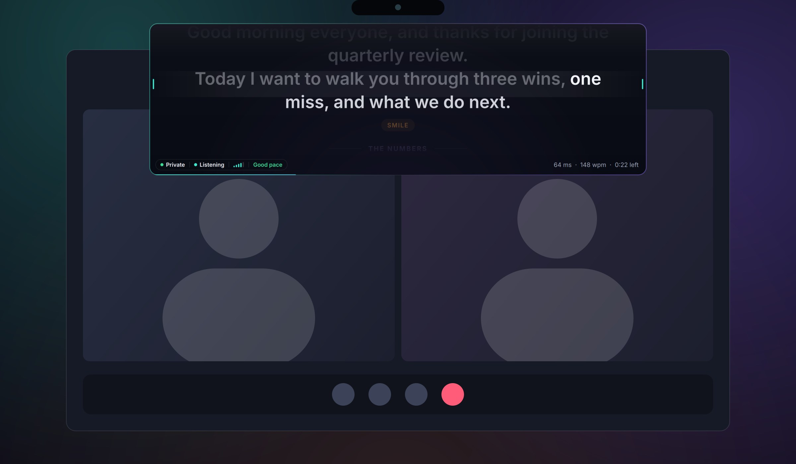
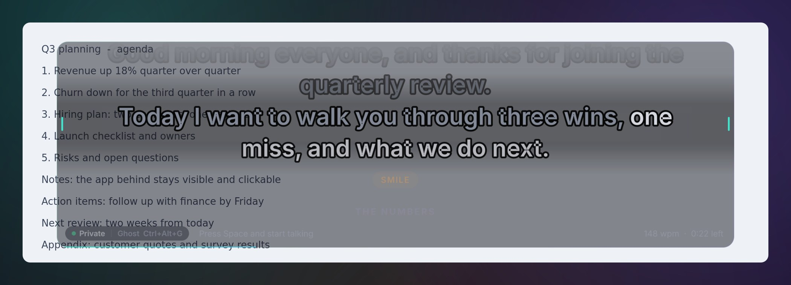
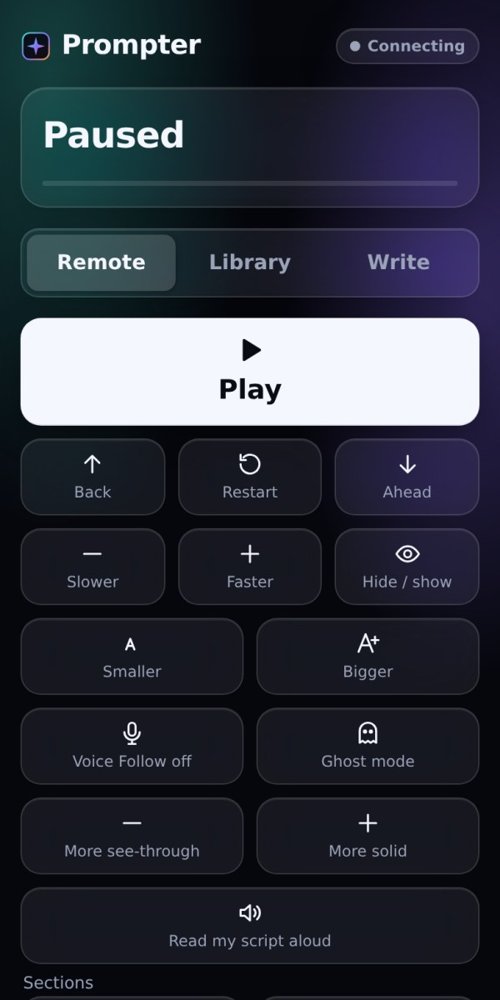

A see-through teleprompter that sits right under your webcam, follows your voice word by word, and stays off the screen share.

Everything other prompters get wrong, fixed in one small app that stays out of your way.
Scrolls with your words, not a timer. Pause, ad-lib, go back. It keeps your place with about 20 ms of processing, entirely offline.
Hear your script in a natural neural voice at your pace, with the prompter following each word. Great for learning the rhythm.
Clicks pass straight through to the app behind. Pick how see-through it is, from 15% to solid, with Ctrl Alt [ ].
Hidden from Zoom, Teams, Meet and OBS on Windows. On macOS 15+ it tells you the truth: share a window, not your whole screen.
Scan a QR code and your phone becomes the remote: play, speed, sections, ghost level, and sending new scripts. PIN protected.
After each practice run you get your pace, filler words, long pauses, skipped lines and a score you can watch improve.
Ghost mode turns the panel see-through while the words stay sharp, so your slides, notes or code stay readable and clickable underneath.

Based on what people say about the tools they use today.
| Glass Prompter | Typical voice-scroll apps | Mac notch apps | |
|---|---|---|---|
| Windows and Mac | Both, same app | Usually one | Mac only |
| Voice scrolling | Word by word, offline, glides smoothly | Often lags or jumps on a mishear | Varies |
| Mic drops mid-take | Reconnects by itself | Often freezes | Varies |
| Screen share status | Honest badge per OS | "Invisible" claims | Often undocumented on macOS 15+ |
| Natural read-aloud | Built in, offline | Rare | Rare |
| Your scripts | Daily backups and export | Lost-script reports are common | Varies |
| Price | Free | Subscription | $30 to $40 |

No app to install. Scan the QR code on your computer, enter the PIN, and control everything from across the room.
Free, no account. Updates arrive inside the app.
64-bit, installs for you only, no admin needed.
Download for WindowsPrefer the command line? Windows: winget install TokunboAjayi.GlassPrompter Mac: brew install --cask tokunboajayi/tap/glass-prompter
The installer isn't code-signed yet, so SmartScreen shows a warning for new apps. Click More info, then Run anyway. Every download has a published SHA-256 fingerprint, and the in-app updater checks it automatically.
The first time, right-click Glass Prompter in Applications and choose Open. On macOS 15 or later, open System Settings, go to Privacy & Security, and click Open Anyway. You only do this once.
On Windows 10 (2004+) and 11 it's excluded from screen sharing and recordings. macOS 15 and later lets screen recorders capture every window, so on a Mac share a single window or app instead of the whole screen. The badge on the prompter always shows the real state.
No. Voice recognition and the read-aloud voice run on your computer. Scripts live in a local library. The only internet request is a once-a-day check for a new version on GitHub, which you can turn off.
Yes. No account, no trial, no watermark.